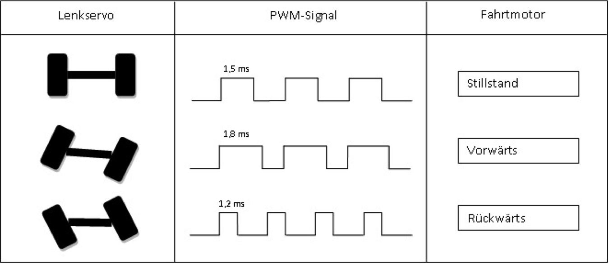
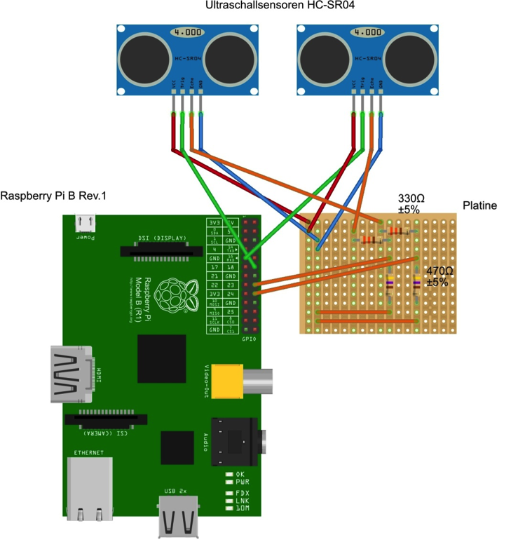
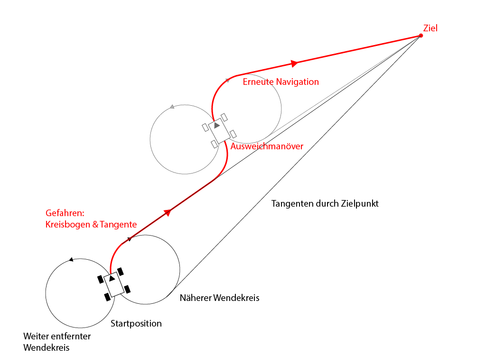

Nach intensiver Recherche und ausführlichen Teambesprechungen wurde die Entscheidung gefällt, den Roboter so modular wie möglich aufzubauen: Die Ansteuerung des Motorreglers und des Lenkservos sollte ein Mikrocontroller übernehmen. Auf der nächsthöheren Schicht, sollte der Raspberry Pi liegen, welcher alle komplexeren Berechnungen, wie die Routenplanung, den Ausweichalgorithmus für Hindernisse und die Verarbeitung der Inputdaten der unterschiedlichen Sensoren durchführt. Auf diese Weise wären einzelne Teile leicht austauschbar und böten so viele Möglichkeiten zur Weiterentwicklung des Roboters.
Bei der Auswahl des RC Autos wurden Kriterien wie Größe und Robustheit besonders beachtet. Es war klar, dass das Auto genug Platz bieten müsse um den Raspberry Pi, das GPS-Modul und die Distanzmessungssensoren gut unterzubringen. Eine Stoßstange und gute Federung waren wichtig, um dem Roboter so viel Sicherheit wie möglich zu bieten.
Vorgabe war, die hauseigene Mikrocontroller-Platine des Robotiklabors der Universität Heidelberg zu nutzen. Diese wurde anhand der Lötanleitung zusammengebaut und mit einem ATmega168 bestückt.
Um eine Distanz zu messen, können Infrarot- oder Ultraschallsensoren verwendet werden. Aufgrund der größeren Reichweite von Ultraschallsensoren fiel die Wahl auf diese, speziell auf das Modell HC-SR04 welches sich durch gute Bewertungen auszeichnet und durch seinen geringen Preis sogar in mehreren Instanzen eingesetzt werden kann, ohne das Budget zu sprengen. Zwei Ultraschallsensoren wurden für ausreichend befunden.
Es handelt sich um das Modell ublox LEA-6H, welches nicht nur GPS-Daten liefert sondern auch einen eingebauten Kompass hat. Dieses wurde von den Betreuern des Praktikums ausgewählt.
Die Verwendung des Betriebssystems Raspbian für den Raspberry Pi war die einzige Vorgabe bezüglich der Software, die gemacht wurde. Für die benötigten Libraries zur Ansteuerung der GPIO-Pins des Raspberry Pis und des GPS-Moduls fiel die Wahl auf die viel-verwendeten Libraries RPi.GPIO und gpsd. Der selbst zu entwickelnde Code wurde in Sinnabschnitte (Hardwareansteuerung/-kommunikation, Routenplanung, Ausweichroutine) untergliedert und auf die unterschiedlichen Teammitglieder verteilt, wobei immer wieder Rücksprache gehalten wurde und der Code gegenseitig korrigiert wurde. Für die Kommunikation zwischen Raspberry Pi und ATmega, wurde ein eigenes Kommunikationsprotokoll in mehreren Prototypen entworfen.
Die ersten Aufgaben bestanden darin, sich mit der Elektronik vertraut zu machen und zu lernen, wie einzelne Komponenten (z.B. die Servos des Autos) angesteuert werden können.
Servomotoren werden über PWM (Pulse-Width-Modulation) Signale gesteuert. Hierbei gibt die Länge des Signals vor, wie sich der Motor bewegt. Etwa alle 20 ms erwartet der Motor einen Input, dieser ist typischerweise zwischen 1 und 2 ms lang. Um die genauen Werte für den Motor und den Lenkservo des Autos zu bestimmen, wurden die von der Fernbedienung übermittelten Signale mit einem Oszilloskop gemessen.
 Exemplarische PWM-Signale und Reaktionen der Motoren
| PWM-Signallänge | Reaktion Lenkservo | Reaktion Fahrtmotor |
|---|---|---|
| 1000 | --- | Vollgas rückwärts |
| 1170 | Max. links | Rückwärts |
| 1500 | Nullposition | Ausgeschaltet |
| 1800 | Max. rechts | Vorwärts |
| 1952 | --- | Vollgas vorwärts |
Die oben dargestellten Messergebnisse wurden dann in Code gegossen, um abstrahierende Fahrfunktionen zu implementieren. Diese wurden zunächst auf dem ATmega in der Programmiersprache C unter Verwendung des Basis-Codes des Robotiklabors umgesetzt und funktionierten einwandfrei. Um den Fahrtregler und damit den Fahrtmotor und den Lenkservo anzusteuern, wurde der ATmega über die Antennenbuchse mit dem Fahrtregler verbunden.
Grafik?
Das Kernstück des Roboters ist der Raspberry Pi und mit diesem mussten alle anderen Komponenten verbunden werden. Die designierten UART- und I²C-Pins des Raspberry Pis wurden verwendet um den GPS-Chip bzw. den Kompass anzuschließen. Da jedoch auch die Verbindung zwischen Raspberry und ATmega über UART hergestellt werden musste, wurden zwei GPIO-Pins des Pis verwendet um eine weitere UART-Schnittstelle zu bitbangen (über Software zu emulieren). Hierzu kam die PIGPIO Library zum Einsatz. Über das selbstgeschriebene Kommunikationsprotokoll sollten nun Pi und ATmega kommunizieren können, jedoch gab es trotz funktionierender Kommunikationsschnittstelle Komplikationen mit dem Mikrocontroller, die in sinnvoller Zeit nicht überwunden werden konnten. So musste der ursprüngliche Entwurf überarbeitet werden. Der Mikrocontroller wurde aus dem Aufbau entfernt, die Fahrfunktionen mussten auf dem Raspberry Pi in Python neu implementiert werden, und die PWM-Signale, die der ATmega zuvor generiert hatte, mussten nun durch den Pi erzeugt werden. Für letzeres wurde die RPi.GPIO Library verwendet, welche Funktionen für die Generierung von PWM-Signalen bereitstellt. Außerdem mussten die beiden Ultraschallsensoren mit dem Raspberry verbunden werden. Dies geschah über eine kleine selbstverlötete Platine, welche sicherstellen soll, dass die fließenden Spannungen nicht zu hoch sind (die Ultraschallsensoren arbeiten mit 5V und senden auch Signale in dieser Höhe, die GPIO-Pins des Raspberrys dürfen jedoch nicht mehr als 3.3V erhalten).
Um alle Teile des Roboters mit Strom zu versorgen, werden zwei Batterie-Packs verwendet: das eine liefert Strom für den Motorregler und die Motoren, das zweite versorgt den Raspberry Pi, die Ultraschallsensoren sowie das GPS-Modul. Damit der Pi nicht zu viel Spannung erhält, wurde eine Spannungsregler-Schaltung gelötet.
Der Programmcode lässt sich in vier größere Sinnabschnitte gliedern:
Die main-Funktion bedient sich zweier Hilfsfunktionen:
prüft ob sich das Auto bis auf einen Schwellenwert genau am Ziel befindet
korrigiert den Kurs durch befahren einer Kreisbahn in der durch direction vorgegebenen Richtung. Die Länge der Kreisbahn ist durch angle und radius vorgegeben. Die Geschwindigkeit ist variabel, es wird jedoch empfohlen so langsam wie möglich zu fahren. Watcher ist ein Objekt der Klasse Watcher, welche für die Hinderniserkennung zuständig ist. Während der Kurskorrektur wird auf Hindernisse geprüft.
if __name__ == '__main__': try: target = tuple(float(i) for i in sys.argv[1:3]) except ValueError: target = None mainRoutine(target)
und:
def mainRoutine(target): if target is None or len(target) != 2: print "no reasonable target given" return
Sind die Eingaben nicht von der Form "Zahl_1 Zahl_2", so beendet das Programm. Sind die Eingaben richtig, dann werden die nötigen Instanzen unterschiedlicher Klassen erzeugt und initialisiert:
tracker = GPSTracker() navigator = Navigator(tracker) navigator.setRadius(RADIUS) watcher = Watcher()
Die Klasse GPSTracker ermöglicht die Position des Autos sowie dessen Orientierung anhand der letzten Positionen zu bestimmen. Die Klasse Navigator berechnet den Kurs, der angesteuert werden muss um das Auto zum Ziel zu führen. Watcher implementiert die Überwachung der Strecke vor dem Auto sowie den Ausweichalgorithmus für etwaige Hindernisse.
Als nächstes muss auf ein GPS-Signal gewartet werden. Sobald dieses vorliegt wird in eine Endlosschleife eingetreten und zunächst überprüft, ob das Auto gerade stillsteht. Ist dies der Fall, so steht es noch am Anfang seiner Reise. Daher muss zunächst die Orientierung bestimmt werden, damit der Navigator den Kurs berechnen kann. Dazu muss die Liste der letzten Positionen des GPSTrackers gefüllt werden, also fährt das Auto zunächst ca. fünf Meter, füllt dabei über tracker.getPosition() die Liste und hält dann wieder an. Später wurde das GPS-Modul auf einer Stange befestigt, und damit wurde diese Weise der Orientierungsbestimmung überflüssig. In der letzten Version der Software wird die Orientierung über den Kompass abgefragt. Fährt das Auto gerade, so wird lediglich die Variable driving auf True gesetzt.
while True: if is_at(curPos, tracker.getPosition()): #Car stands still print "standing" start = time.time() print "driving at", speed drive(speed) #Drive for a few meters. while (time.time() - start) < 2: #While driving save positions to tracker. watcher.obstancle() tracker.getPosition() stop() line = None else: driving = True
Dann wird überprüft ob das Auto bereits an seinem Ziel angekommen ist. Falls dem so ist, hält es an und das Programm bricht aus der Schleife aus. Ist es nicht an seinem Ziel, wird überprüft ob sich das Auto auf dem richtigen Kurs befindet und gegebenenfalls auf den korrekten Kurs gebracht.
Die letzte if-Anweisung prüft, ob das Auto gerade fährt - und wenn dem so ist, speichert es seine Position in die Liste der letzten Positionen des GPSTrackers und prüft auf Hindernisse.
Die erste wesentliche Komponente des Navigationscodes ist das GPS-Tracking. Die Klasse GPSPoller stellt die Verbindung zu einem auf dem Raspberry Pi laufenden gpsd-Prozess her und fragt im Hintergrund stets Daten ab. Die Klasse Compass wird verwendet, um die I2C-Daten des angeschlossenen Kompasses auszulesen und auszuwerten; sie stellt auch Kalibrierungsfunktionen bereit. Ein Objekt der GPSTracker-Klasse legt intern einen GPSPoller und einen Compass an und ermöglicht es so, zu jedem Zeitpunkt die Methoden getPosition und getOrientation bereitzustellen, die Ort und Richtung des GPS-Autos zurückgeben.
Kontakt zu gpsd und Speicherung der Daten erfolgt in einem eigenen Thread:
class GPSPoller(threading.Thread): def __init__(self): threading.Thread.__init__(self) global gpsd gpsd = gps(mode = WATCH_ENABLE) self.current_value = None self.running = True def run(self): global gpsd while self.running: gpsd.next()
getPosition bildet einen Mittelwert über die letzten drei Längen- und Breitengradwerte, die von gpsd direkt zurückgegeben werden, mit einem zeitlichen Abstand von 100 ms. Dieser Mittelwert wird in der Form (latitude, longitude) zurückgegeben.
Die Compass-Klasse muss zunächst auf I2C-Ebene mit dem Kompassmodul kommunizieren. Dazu wurden die Hilfsfunktionen read_byte, read_word, read_word_2c und write_byte geschrieben.
Die Daten, die das Kompassmodul liefert, geben gewissermaßen die Position (x, y, z) der Spitze einer Kompassnadel an. Um hieraus eine Himmelsrichtung ermitteln zu können, wird das Modul einmal um 360 Grad gedreht, während kontinuierlich Samples genommen werden. Diese werden genutzt, um den Mittelpunkt einzustellen. Dann kann mit dem Arkustangens der Winkel zu Norden ermittelt werden. Weiter muß noch eine Eichung auf Norden durchgeführt werden. Hieraus ergeben sich die Werte x_offset, y_offset und angle_offset, die sich nach der Kalibrierung ergeben und zur Eichung des Kompasses verwendet werden.
getOrientation liest die Daten aus, errechnet trigonometrisch den Winkel und normalisiert ihn so, dass stets der Winkel im Uhrzeigersin zwischen Norden und der Kompassausrichtung angegeben wird.
Die Klasse Navigator nutzt ein GPSTracker-Objekt zur Positionsbestimmung und stellt die Funktionen navigate und on_track bereit.
Die Navigation funktioniert prinzipiell folgendermaßen: Ausgehend von der Position und Orientierung des Roboters und eines Kurvenradius, der im Voraus eingestellt wird, werden zwei Kreise betrachtet, die der Roboter bei entsprechendem Lenkeinschlag nach links oder rechts fahren kann. Es wird dann der Kreis ausgewählt, dessen Mittelpunkt näher am angesteuerten Zielpunkt liegt, und Tangenten an diesen Kreis durch den Zielpunkt gelegt. Diejenige Tangente, die auf dem Kreisbogen näher am Roboter liegt, wird dann angestrebt.
Zu beachten ist bei der ganzen Berechnung, daß wir direkt auf GPS-Daten, d. h. Längen- und Breitengradangaben arbeiten. Die geometrische Berechnung erfolgt im Wesentlichen kartesisch, d. h. die Genauigkeit ist nur bei vergleichsweise geringen Distanzen (einige zehn Kilometer sollten kein Problem sein) gewährleistet. Um trotzdem keinen Unsinn zu berechnen, werden die Mittelpunkte der Kreise exakt anhand des Breitengrades berechnet.
navigate gibt nach dieser Berechnung folgenden Datensatz zurück:
Die Methode on_track erhält als Argument eine Tangente, wie als zweiter Rückgabewert von navigate erhalten, und prüft, ob der aktuelle Standpunkt nicht weiter als ein gewisser Schwellenwert (0.00001 hat sich als praktikabel erwiesen) von ebendieser Tangenten entfernt ist. Wenn die Entfernung kleiner als das ist, befindet sich das Auto noch auf dieser Linie, ist also on track, es wird True zurückgegeben. Wenn sie größer ist, wird False zurückgegeben – es gab wohl aus irgendeinem Grund (Hindernisse, Ungenauigkeit der GPS-Daten, Ungenauigkeit im Abfahren der Kreisbahn) eine Abweichung vom navigierten Pfad, woraufhin die Hauptroutine die Navigation erneut starten wird.
Die Datei helpers.py enthält einige Hilfsfunktionen.
Die Hinderniserkennung basiert auf einem einfachen Prinzip. Zwei Untraschallsensoren messen regelmäßig die Zeit ausgesannter und wieder empfangener Schallpulse. Daraus lässt sich bei einer Reflexion eine Entfernung bestimmen. Anhand der Datenpunkte zweier Sensoren kann dann nicht nur die Entfernung, sondern auch die Richtung zu einem Objekt bestimmt werden. Dieses Prinzip machen wir uns zunutze. Jeder der Sensoren sendet in jedem main-Zyklus ein Signal und misst damit die Entfernung zu möglichen Hindernissen. Sieht das Programm ein Objekt unter einem gewissen Schwellwert, kann es anhand der beiden Daten entscheiden, auf welcher Seite es am einfachsten passieren kann und lenkt in Richtung der größeren Distanz. Da im Moment eines erkannten Hindernisses die Navigation zweirangig ist übernimmt das Programm bis zum Verschwinden (Maximaldistanz) des Hindernisses die Kontrolle.
Die Hinderniserkennungsroutine wird durch die Klasse Watcher umgesetzt, welche folgenden Funktionen enthält:
def alarm(self): alarmL=self.watchlistL[-1] alarmR=self.watchlistR[-1] if((self.watchlistL[-1]-self.watchlistR[-1])*(self.watchlistL[-2]-self.watchlistR[-2]) < 0): if(alarmL < alarmR): alarmR = alarmR - bias if(alarmL > alarmR): alarmL = alarmL - bias return (alarmL, alarmR)
Alarm gibt die zuletzt gemessenen Abstände zu Objekten auf der linken und rechten Seite des Autos zurück. Der wichtigste Teil dieser Routine ist allerdings die Funktion beim Wechsel der Richtung der größeren Distanz dieser einen bias abzuziehen. Das Prinzip ist denkbar einfach, aber sorgt dafür, dass Objekte direkt vor dem Auto, wo die Entfernungsmessung aufgrund ihres eigenen Messfehlers nicht entscheiden kann in welcher Richtung dieses liegt, trotzdem zuverlässig umfahren werden, da das Auto dazu gedrängt wird eine einmal eingeschlagene Richtung beizubehalten. Aufgrund der statistischen Schwankung im Bereich des Messfehlers ist diese Entscheidung dann mehr oder weniger zufällig, was bei direkt frontalen Objekten aber keinen Nachteil verursacht.
fragt die Ultraschallsensoren ab und füllt jeweils eine Liste für jeden Sensor mit Messwerten.
Hauptroutine der Hinderniserkennung. Fragt über alarm
Der hardwarenahe Code umfasst zum einen die Dateien controlServos.py und drive.py, welche für die Ansteuerung der Motoren des Autos zuständig sind und die Fahrtfunktionen enthalten und zum anderen die Datei getDistance.py, welche die Ultraschallsensoren abfragt.
definiert Variablen für die Länge der zu übermittelnden PWM-Signale für geradeaus lenken/nicht fahren (BASE), rechts lenken (RIGHT), links lenken (LEFT), vorwärts fahren (FORWARD) und rückwärts fahren (BACK). Um Gradierung in Lenkung und Geschwindigkeit zu erlauben, wurden diese Variablen in Abhängigkeit von BASE definiert, sodass man sie mit einem Faktor verwenden kann/muss.
Weiterhin werden die grundlegenden Fahrtfunktionen steerS(deg) und driveS(speed) implementiert, welche jeweils eine Fließkommazahl zwischen -1 (Anschlag rechts bzw. Vollgas rückwärts) und 1 (Anschlag links bzw. Vollgas vorwärts) erwarten.
definiert Fahrfunktionen auf einer höheren Ebene. Anstelle von Gradierungen wird drive(speed) die gewünschte Geschwindigkeit in Metern pro Sekunde, steer_only(radius) der Kurvenradius in Metern und steer_at(speed, radius) beides übergeben. Die stop()-Funktion hält das Auto ohne Input an, während die stunt()-Funktion ein Easter Egg ist, welche einen kleinen Stunt ausführt.
setzt benötigte GPIO-Pins des Raspberry Pis so, dass sie für den Input (echo) und Output (trig) für die beiden Ultraschallsensoren verwendet werden können. Unter Verwendung der Zeit, die die Schallwellen benötigen um nach dem Senden wieder am Sensor anzukommen (timeElapsed) wird die Distanz zum erkannten Objekt in Metern berechnet und zurückgegeben.